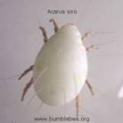

| Home |
| SUGARCANE |
PRIMARY STORAGE PEST |
INTERNAL FEEDERS |
| 1. Rice weevil |
| 2. Lesser grain borer |
| 3. Angoumois grain moth |
| 4. Pulse beetle |
| 5. Cigarette beetle |
| 6. Drug store beetle |
| 7. Tamarind Beetle |
| 8. Sweet Potato weevil |
| 9. Potato tuber moth |
| 10. Arecanut beetle |
EXTERNAL FEEDERS |
| 11. Red flour beetle |
| 12. Indian meal moth |
| 13. Fig moth or almond moth |
| 14. Rice moth |
| 15. Khapra beetle |
SECONDARY STORAGE PEST |
| 16. Saw toothed grain beetle |
| 17. Long headed flour beetle |
| 18. Flat grain beetle |
| 19. Grain lice |
| 20. Grain mite |
| Questions |
| Download Notes |
STORED GRAIN :: SECONDARY STORAGE PEST :: GRAIN MITE
20. Grain mite: Acarus siro (Acarina)
Bionomics : It is pale straw to dark reddish brown mite. It lays about 100 eggs. The eggs are hatched into 6 legged larvae which moult into nymphs. There are 1-3 instars. The life cycle is completed in 9-12 days at 23 0 C and 70 % relative humidity.
|  | Damage symptoms : It feeds on the surface of the grains. It attacks cereal grains, flour and other eatables.
Minor Pests of Stored Grains : The other insect species recorded as minor pests on stored grains and products in India are the; the cadelle, Tenebroides mauritanicus (Trogossitidae: Coleoptera) and the black fungus beetle, Alphitobius laevigatus (Tenebrionidae: Coleoptera) |
MANAGEMENT OF STORAGE PESTS
The effective management of storage pests may be ensured by drying the grains properly before storage, storing new grains in the clean godowns or receptacles and plugging all cracks, crevices and holes in the godowns thoroughly. If infestation of grain has already taken place, then application of chemicals becomes necessary.
1. Surface treatment
Disinfect old gunny bags by dipping them in 0.0125 per cent fenvalerate 20EC or cypermethrin 25EC for 10 minutes and drying them in shade before filling with grains or use new gunny bags. Disinfect empty godowns or receptacles by spraying 0.05 per cent malathion emulsion on the floor, walls and ceiling.
2. Seed treatment.
Mixing of malathion 5 per cent at the rate of 250 g per quintal of seed is recommended. The grains may also be treated with/25 ml of malathion 50 EC or 2 ml of fenvalerate 20EC or 1.5 ml of cypermethrin 25EC or 14 ml of deltamethrin 2.8EC per quintal of seed by diluting in 500 ml of water. Against pulse beetle (dhora), cover the pulses stored in bulk with 7 cm layer of sand or sawdust or dung ash.
3. Fumigation
Metallic drums or wooden boxes can be used for fumigating small quantities of grain. In India, ethylene dichloride and carbon tetrachloride mixture has been recommended for fumigation of foodgrains in storage at farm level, and hydrogen phosphide in the form of aluminium phosphide or methyl bromide for protection in warehouses, godowns and silos.
Mixture of ethylene dichloride and carbon tetrachloride at the rate of 1 litre for 20 quintals of grain or 35 litres per 100 m3 of space with exposure period of 4 days is recommended. Methyl bromide is used at the rate of 3.5 kg per 100 m3 of space with 10-12 hours exposure. The fumigant, hydrogen phosphide (aluminium phosphide), is available in tablet form and can be used at the rate of one tablet (3 g) per metric tonne or 25 tablets per 100 m3 of space with an exposure period of 7 days.
Use of improved storage receptacles:
The grains can be best protected by using improved insect-proof receptacles of various types.
(a) Indoor Bins
Domestic metal bins, Gharelu theka, Pucca kothi, Welded wire-mesh bin, Reinforced cement ring bins, Paddy straw-mud structure.
(b) Outdoor Bins
Flat and hopper bottom-metal bins, Composite bins, Partly underground and above ground structures, Seed storage bins, Ferro-cement bins, Pusa bin, Improved godowns, Bulk storage installations and Vacuum process storage.
INTEGRATED MANAGEMENT OF STORED PRODUCE PESTS
The control methods of stored produce pests can be categorized into preventive and curative measures.
Preventive measures
- Brush the cracks, crevices and corners to remove all debris in the godown.
- Clean and maintain the threshing floor/yard free from insect infection and away from the vicinity of villages.
- Clean the machines like harvester and thresher before their use.
- Made the trucks, trolleys or bullock carts free from infestation.
- Clean the godowns/ storage structures before storing the newly harvested crop to eliminate various bio stages of pest hiding.
- Provide a metal sheet upto a height of 25 cm at the bottom of the wood in doors to arrest the entry of rats.
- Fix up wire meshes to windows, ventilators, gutters, drains etc., to prevent entry of rats, birds and squirrels.
- Remove and destroy dirt, rubbish, sweepings and webbings etc from the stores.
- Close all the rat burrows found in godown with a mixture of broken glass pieces and mud plastered with mud/ cement.
- Plaster the cracks, crevices, holes found on walls, and floors with mud or cement and white wash the stores before storing of grains.
- Provide dunnage leaving gangway or alleyway of 0.75 to 1 m all around to maintain good storage condition.
- Store the food grains in rat and moisture proof storage structures.
- Disinfest the storage structures receptacles by spraying malathion 50 EC @ 3 lit 100 m before their use.
Curative measures
Ecological methods
- Manipulate the ecological factors like temperature, moisture content and oxygen through design and construction of storage structures/ godown and storage to create ecological conditions unfavourable for attack by insects.
- Temperature above 420 C and below 150 C retards reproduction and development of insect while prolonged temperature above 450 C and below 100 C may kill the insects.
- Dry the produce to have moisture content below 10% to prevent the buildup of pests.
- Kill the pests bio stages harbored in the storage bags, bins etc., by drying in the sun light.
- Store the grains at around 10 % moisture content to escape from the insects attack.
- Manipulate and reduce oxygen level by 1% to increase the CO2 level automatically, which will be lethal to all the stages of insects.
Physical methods
- Provide a super heating system by infrared heaters in the floor mills and food processing plants to obtain effective control of pests since mostly the stored produce insects die at 55 –600C in 10 – 20 minutes.
- Modify the storage atmosphere to generate low oxygen (2.4% and to develop high carbon di oxide (9.0 – 9.5) by adding CO2 to control the insects.
- Seed purpose: Mix 1 kg of activated kaolin (or) lindane 1.3 D (or) malathion 5 D for every 100 kg of seed and store/pack in gunny or polythene lined bags.
- Grain purpose: Mix 1 kg activated kaolin for every 100 kg of grain and store. To protect the pulse grains, mix activated kaolin at the above dosage or any one of the edible oils at 1 kg for every 100 kg of grain or mix 1 kg of neem seed kernel for every 100 kg of cereal / pulse and store.
- Do not mix synthetic insecticides with grains meant for consumption.
Cultural methods
- Split and store pulses to escape from the attack by pulse beetle since it prefers to attack whole pulses and not split ones.
- Store the food grains in air tight sealed structures to prevent the infestation by insects.
Mechanical methods
- Sieve and remove all broken grains to eliminate the condition which favour storage pests.
- Stitch all torn out bags before filling the grains.
Chemical methods
- Treat the walls, dunnage materials and ceilings of empty godown with malathion 50 EC 10 ml/L (or) DDVP 76 WSC 7 ml/L1 at 3 Ll spray solution/10 sq.m.
- Treat the alleyways and gangways with malathion 50 EC 10 ml/L or DDVP 76 WSC 7 ml/ L (1 L of spray fluid/270 m3).
- Spray malathion 50 EC 10 ml/ L with @ 3 L of spray fluid / 100 m2 over the bags.
- Do not spray the insecticides directly on food grains.
- Use knock down chemicals like lindane smoke generator or fumigant strips pyrethrum spray to kill the flying insects and insects on surfaces, cracks and crevices.
- Use seed protectants like pyrethrum dust, carbaryl dust to mix with grains meant for seed purposes only.
- Decide the need for shed fumigation based on the intensity of infestation.
- Check the black polythene sheets or rubberized aluminium covers for holes and get them ready for fumigation.
- Use EDB ampoules (available in different sizes 3 ml, 6 ml, 10 ml, 15 ml and 30 ml) at 3 ml/quintal for wheat and pulses and 5 ml/ quintal for rice and paddy (Do not recommend EDB for fumigation of flour oil seeds and moist grains)
- Use EDCT (available in tin containers of 500 ml, 1 liter and 5 litres) at 30 – 40 litres/ 100 cubic meter in large scale storage and 55 ml/quintal in small scale storage.
FUMIGATION
Use fumigants like ethylene dibromide (EDB), ethylene dichloride carbon tetra chloride (EDCT), aluminium phosphide (ALP) to control stored produce pests effectively. Apply aluminum phosphide (available in 0.6 g and 3 gram tablets) @ 3 tablets (3 gram each) per tonne of food grains lot with help of an applicator. Choose the fumigant and work out the requirement based on the following guidelines.
- 3 tablets of aluminum phosphide 3 g each per tonne of grain.
- 21 tablets of aluminium phosphide 3 g each for 28 cubic meters
- Period of fumigation is 5 days
Mix clay or red earth with water and make it into a paste form and keep it ready for plastering all round the fumigation cover or keep ready sand snakes. Place the required number of aluminium phosphide tablets in between the bags in different layer. Cover the bags immediately with fumigation cover. Plaster the edges of cover all round with wet red earth or clay plaster or weigh down with sand snakes to make leaf proof. Keep the bags for a period of 5-7 days under fumigation based on fumigant chosen. Remove the mud plaster after specified fumigation periods and lift cover in the corner to allow the residual gas to escape. Lift the cover after few hours to allow aeration.